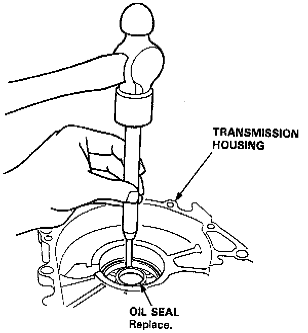
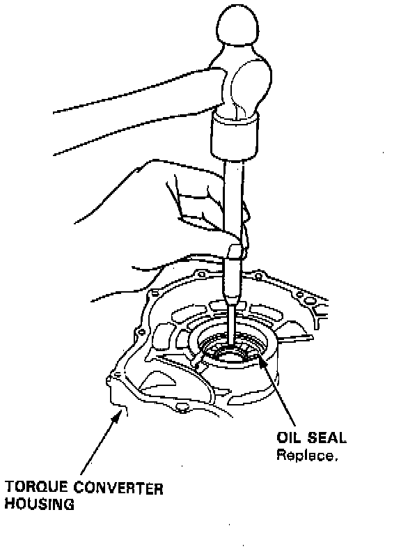

Operation CHARM
: Car repair manuals for everyone.
Home
>>
Acura
>>
1995
>>
Integra (GS-R) L4-1797cc 1.8L DOHC (VTEC)
>>
Repair and Diagnosis
>>
Transmission and Drivetrain
>>
Automatic Transmission/Transaxle
>>
Service and Repair
>>
Oil Seal
>>
Removal
Removal
1.
Remove the
differential assembly
.

2.
Remove the oil seal from the transmission housing.

3.
Remove the oil seal from the torque converter housing.